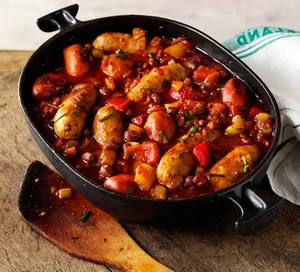

Sausage Casserole
Sausage Casserole

Decription
If you are looking for an easy to make meal, packed full of protein, look no further.
Easy to make, and suitable for freezing
Serves 4
Ingredients
- 12 Sausages
- 400g tin of mixed beans
- 400g tin of kidney beans
- 2 x 400g tins of chopped tomatoes
- 125ml Chicken stock
- Red Pepper
- 1 Tbsp garlic granuals
- 1 Tbsp smoked paprika
- 1 Tbsp cumin
- 1 Tbsp Thyme
Steps
- Oil or Fry-Lite a frying pan and cook sausages evenly for 5 minutes
- In a seperate pan, fry off the onions until brown
- Add the sausages back in the mix with the onions
- Add the chopped red pepper and cook for a further 3 minutes (Or until the peppers are soft)
- Next, add in the Garlic, Smoked Paprika, Cumin and Thyme along with the chicken stock
- Carefully add the chopped tomatoes
- Turn the heat down to minimum, cover and let it simmer for 40 minutes
- Stir in the mixed beand and kidney beans and cook for a further 5 minutes
- Serve with some crispy bread and butter